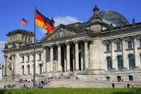
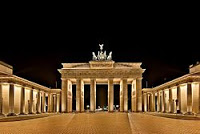
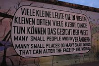

¿Que ver en Berlin?
Berlin es la ciudad mas grande del país, sin olvidar que es conocida por ser una de las más verdes de Europa. Aqui encontraremos una oferta muy variada como son:
Museos, monumentos, festivales, fiestas nocturnas, (en especial para los amantes del tecnho), zonas verdes, historias, actividades con niños. es una ciudad para todos los gustos donde disfrutar tus vacaciones o escapadas de fin de semana. Descubre también la region de región de Branderburgo, que rodea la capital y cuenta con una oferta increíble.
Si buscas vuelos baratos, hoteles y alquiler de coches, no olvides las compañías low cost, donde conseguirás hacer todas tus reservas a los mejores precios.
Aquí les dejamos una lista Top, de los lugares de interés turístico:
-
El edificio Reichstagd
Es la sede del pariamento Alemán, donde se toman las decisiones para el país, podrás subir hasta su cúpula, que esta hecha de vidrio y obtener una maravillosa vista de la ciudad.
-
Puerta Brandenburgo (Branderburger Tor)
Considerada como uno de los principales símbolos de Alemánia y una gran atracción para los turistas. El antiguo monumento se alza sobre la Plaza de París. Durante los &aucute;ltimos años de la segunda Guerra Mundial, los edificios cercanos acabaron destruidos por los bombardeos, quedando en pie tan solo la Puerta de Branderburgo.
-
El Muro de Berlín
La construcción y especialmente su caída, han sido uno de los momentos más importantes de la historia del siglo XX. Durante unos 28 años este Muro dividió Berlín es dos partes. Al día de hoy lograrás ver los restos del Muro en un recorrido de 1,3 kilómetros aún conservados. Este recorrido es conocido como East Side Gallery.